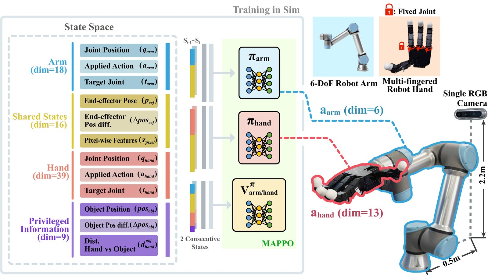
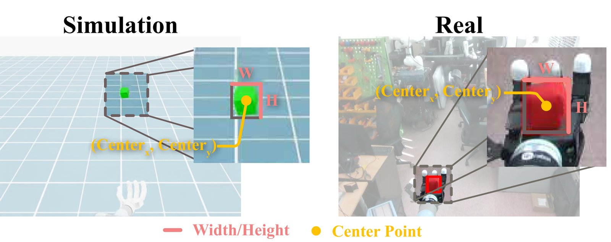
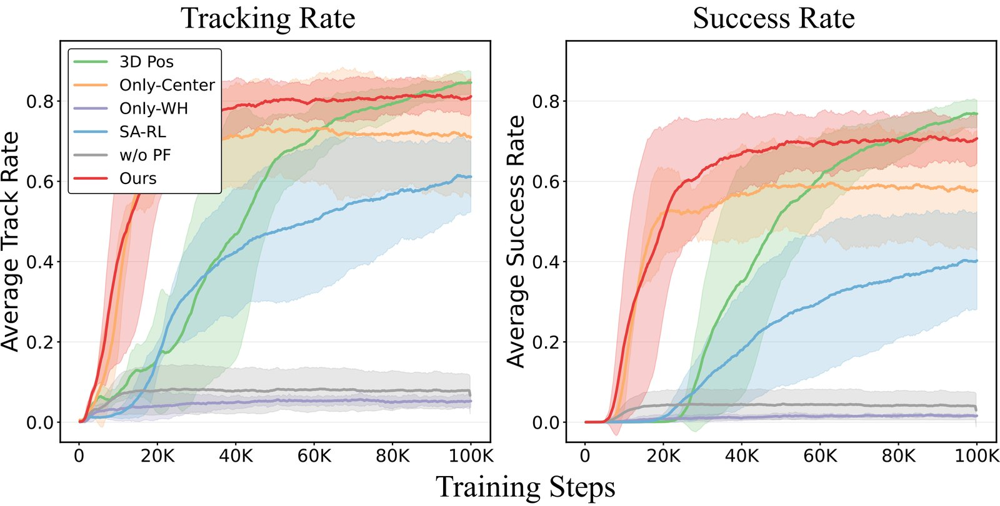
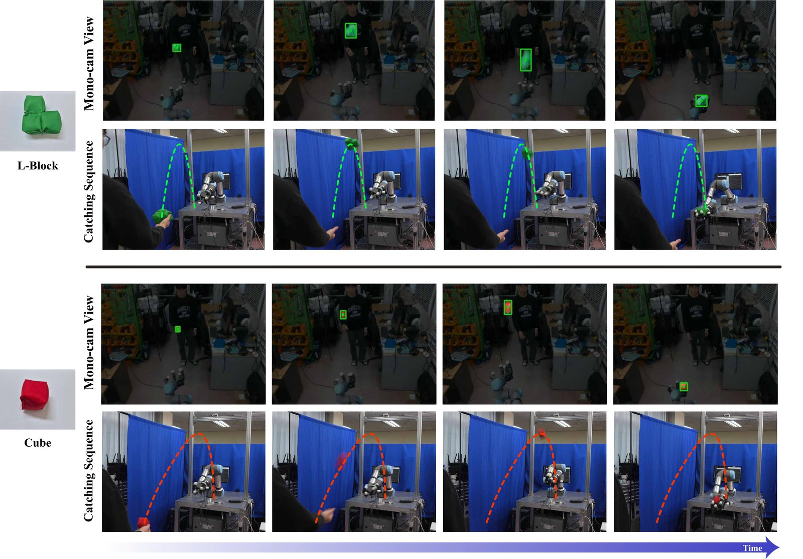

To catch a thrown object, a robot must be able to perceive the object's motion and generate control actions in a timely manner. Rather than explicitly estimating the object's 3D position, this work focuses on a novel approach that recognizes object motion using pixel-level visual information extracted from a single RGB image. Such visual cues capture changes in the object's position and scale, allowing the policy to reason about the object's motion.
Furthermore, to achieve stable learning in a high-DoF system composed of a robot arm equipped with a multi-fingered hand, we design a heterogeneous multi-agent reinforcement learning framework that defines the arm and hand as independent agents with distinct roles. Each agent is trained cooperatively using role-specific observations and rewards, and the learned policies are successfully transferred from simulation to the real world.
Real-world demonstrations of Pixel2Catch catching various objects thrown by a human.
The robot arm and the multi-fingered hand are modeled as independent agents with role-specific observations and rewards. The arm agent (πarm) focuses on positioning the end-effector to reach the thrown object, while the hand agent (πhand) concentrates on forming stable grasps during the catching phase. Both policies are trained cooperatively with MAPPO under the Centralized Training with Decentralized Execution (CTDE) paradigm.

Instead of explicit 3D position estimation, we extract pixel-level features from a single RGB image: the center coordinates (cx, cy), width w, height h, and their temporal differences. The center motion encodes the object's apparent direction; the width/height scale change encodes relative distance. SAM2 is used for robust object segmentation under varying lighting and backgrounds.


| Metric | Method | Objects | |
|---|---|---|---|
| Seen | Unseen | ||
| T.R. (%) | w/o PF | 12.13 ± 1.27 | 12.11 ± 1.90 |
| Only-WH | 8.03 ± 0.60 | 6.11 ± 0.35 | |
| Only-Center | 87.07 ± 1.62 | 87.50 ± 1.53 | |
| S-A RL | 78.20 ± 1.32 | 75.83 ± 2.00 | |
| 3D Pos | 93.33 ± 0.55 | 91.83 ± 1.16 | |
| Proposed | 89.97 ± 0.21 | 89.28 ± 0.79 | |
| S.R. (%) | w/o PF | 8.93 ± 1.04 | 7.89 ± 1.46 |
| Only-WH | 5.53 ± 0.51 | 4.00 ± 0.17 | |
| Only-Center | 81.27 ± 0.76 | 80.72 ± 0.38 | |
| S-A RL | 63.50 ± 0.85 | 65.44 ± 2.25 | |
| 3D Pos | 90.43 ± 1.27 | 89.10 ± 1.39 | |
| Proposed | 84.13 ± 0.50 | 84.83 ± 1.17 | |
T.R. = Tracking Rate, S.R. = Success Rate. Bold = best.

| Metric | Method | Objects | ||
|---|---|---|---|---|
| Cube | L-block | Triangle | ||
| T.R. (%) | Only-WH | 0.0 ± 0.0 | 0.0 ± 0.0 | 0.0 ± 0.0 |
| Only-Center | 44.73 ± 7.80 | 44.80 ± 7.87 | 47.47 ± 5.15 | |
| S-A RL | 64.67 ± 9.01 | 57.27 ± 8.76 | 61.40 ± 8.22 | |
| 3D Pos | 70.83 ± 5.69 | 65.83 ± 10.67 | 70.00 ± 6.09 | |
| Proposed | 77.93 ± 6.56 | 76.60 ± 4.15 | 74.67 ± 7.67 | |
| S.R. (%) | Only-WH | 0.0 ± 0.0 | 0.0 ± 0.0 | 0.0 ± 0.0 |
| Only-Center | 15.27 ± 7.33 | 10.60 ± 8.37 | 17.27 ± 3.52 | |
| S-A RL | 31.27 ± 5.55 | 34.00 ± 8.63 | 30.00 ± 6.67 | |
| 3D Pos | 45.83 ± 5.00 | 44.17 ± 4.19 | 35.83 ± 5.69 | |
| Proposed | 60.60 ± 4.30 | 51.27 ± 6.60 | 46.60 ± 4.77 | |
Results averaged over 360 trials per policy (3 objects × 2 throwers × 2 backgrounds × 30 trials).
@article{kim2026pixel2catch,
title = {Pixel2Catch: Multi-Agent Sim-to-Real Transfer for Agile Manipulation
with a Single RGB Camera},
author = {Kim, Seongyong and Cho, Junhyeon and Lee, Kang-Won and Lim, Soo-Chul},
journal = {IEEE Robotics and Automation Letters},
year = {2026},
note = {Accepted, to appear}
}